Manual básico de usuario ¶
- Registrarse
- Login
- Logout
- Ver datos de usuario
- Modificar datos de usuario
- Recuperar contraseña
- Añadir modificar evento y ver detalle
- Borrar evento
- Pasar evento a PDF
- Calendario
- Añadir y modificar comentario
- Borrar comentario
En este manual básico de usuario sobre la aplicación Eventz se van a tratar los siguientes puntos:
Registrarse ¶
Para registrarnos en la aplicación, primero tenemos que pulsar en la opción del menú "Usuarios" y después en la opción "Registrarse". Esta opción nos llevara a un formulario de registro. En el que tendremos que rellenar los campos que aparecen para registrarnos en la aplicación.
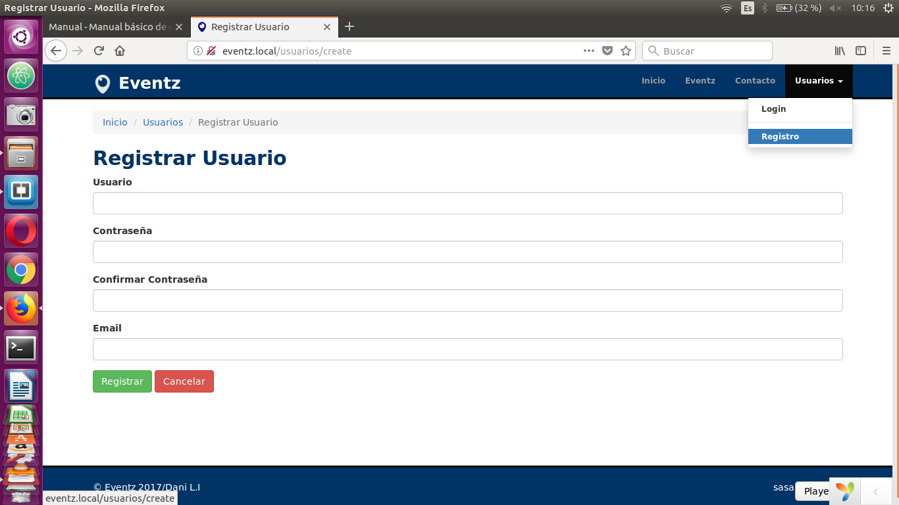
Login ¶
Una vez nos hayamos registrado en la aplicación podremos loguearnos. Esta acción la realizaremos desde el formulario al que se nos redireccionara o desde la opción del menú de "Usuarios", en la opción "Login".
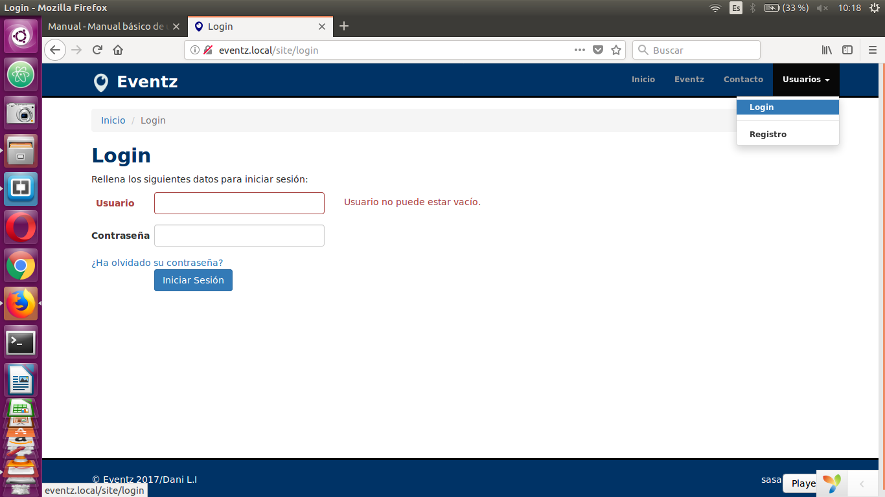
Logout ¶
Cerrar sesión es tan sencillo como pulsar sobre la opción de logout que aparecerá en el menú de "Usuario" cuando estemos logueados.
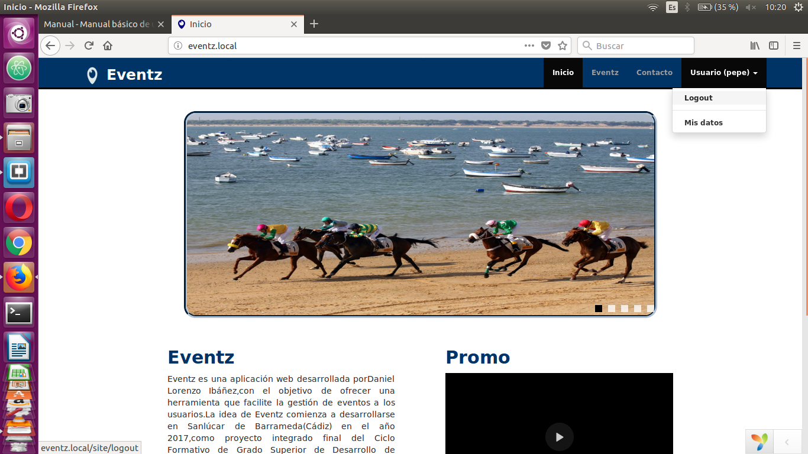
Ver datos de usuario ¶
Para ver los datos de usuario, tienes que pulsar sobre la opción de "Usuario" del menú y dentro sobre la opción de "Mis datos".
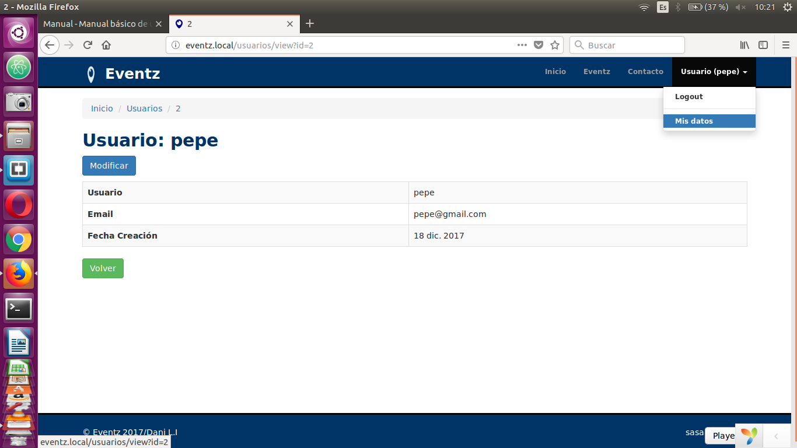
Modificar datos de usuario ¶
Para modificar los datos de usuario, tienes que pulsar sobre el botón de "Modificar" que aparece en la pantalla de visualización de tus datos de usuario, y se abrira en pantalla el formulario de modificación de los datos de usuario.
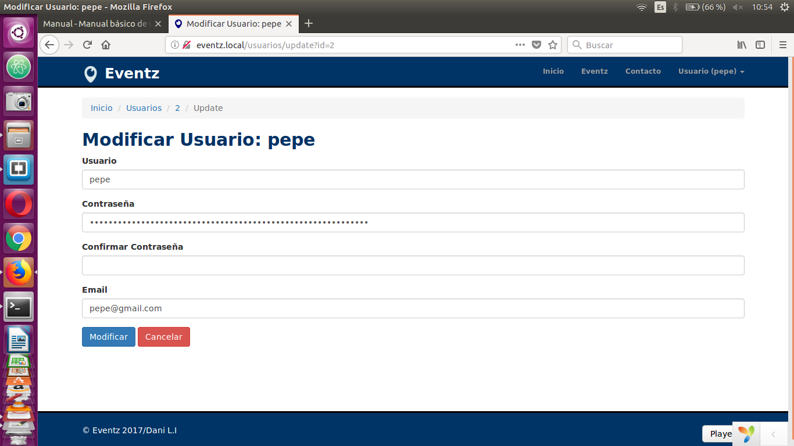
Recuperar contraseña ¶
Si estas registrado en la aplicación pero te has olvidado de la contraseña, la puedes recuperar pulsando en la opción "¿Ha olvidado su contraseña?" que aparece debajo del formulario de login.
Al pulsar sobre ella aparecerá un formulario que le pedira que introduzca el email con el que se registro en la aplicación.
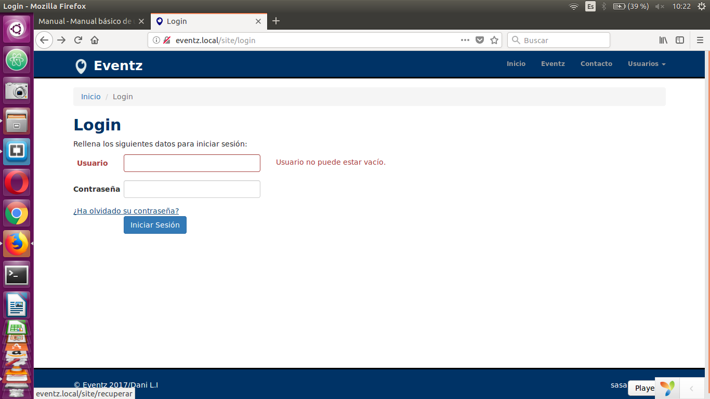
Si el email introducido es correcto, se enviara un correo electrónico al email indicado. El enlace que se ha enviado a tu correo te redireccionara a una página desde la que podras cambiar tu contraseña por una nueva.
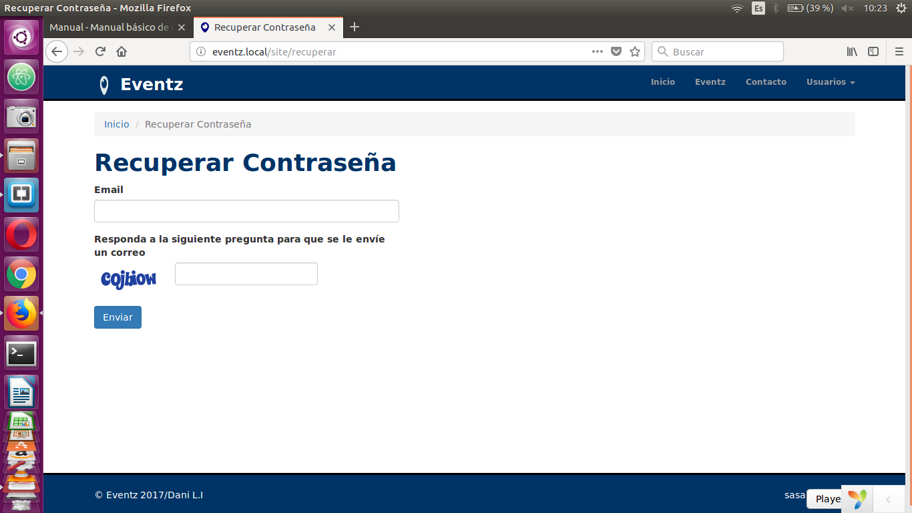
Añadir y modificar evento ¶
Una vez estes logueado esta al menu en la pestaña Eventz podrasa ver todos los eventos.
Pulsando en la opción de "Eventz" te aparecerá una tabla con todos los eventos y sus datos.
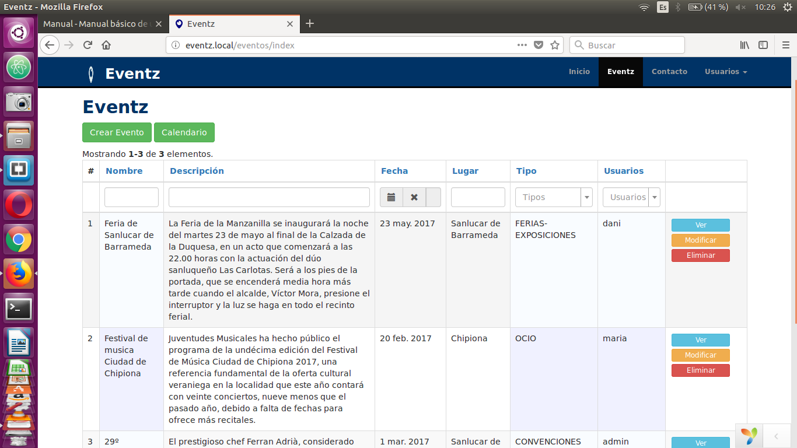
Para añadir un nuevo evento pulsa sobre el boton de "crear evento", y aparecerá en pantalla un formulario, rellene los campos y pulse añadir.
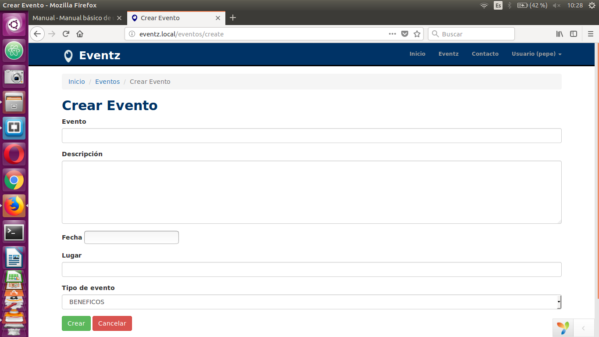
Si desea modificar un evento, pulse sobre el botón de "Modificar" y le aparecerá el mismo formulario para modificar los datos del evento deseado.
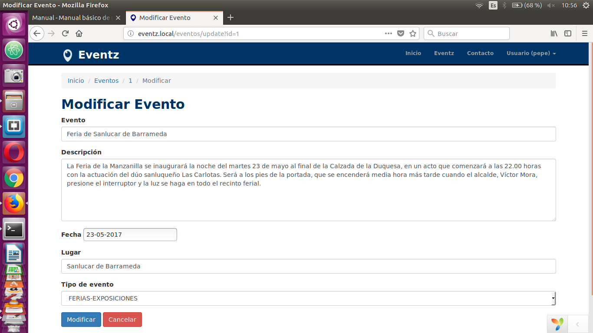
Borrar evento ¶
Si desea borrar un evento, solo debe de pulsar sobre el botón de "Borrar", en el evento deseado.
Pasar evento a PDF ¶
Accedemos a la pestaña "Eventz" y en el detalle del evento pulsando el boton ver existe un boton para pasar a pdf un evento,osea nos genera un documento con los datos del evento en una tabla.
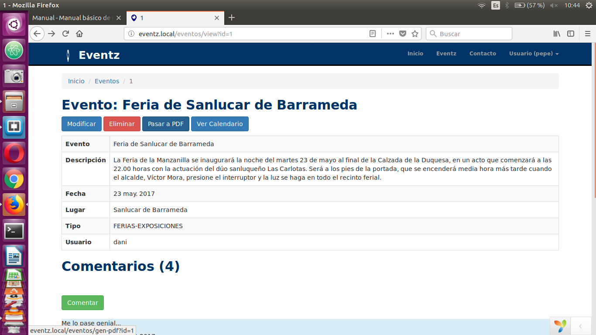
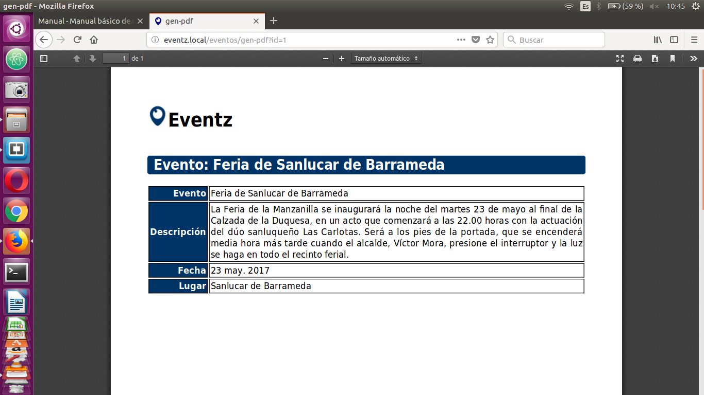
Calendario ¶
Para acceder al calendario, tienes que pulsar sobre el botón de "Calendario".
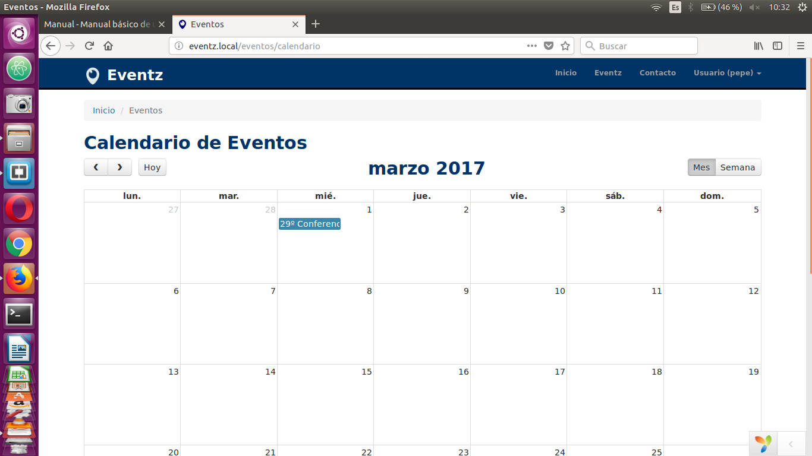
En esta pantalla aparece un calendario con los eventos
Este calendario dispone de tres vistas, un mensual, otra semanal y otra diaria.
Para alternar entre estas tres vistas disponibles solo tienes que pulsar sobre los botones de "Mes", "Semana" o "Día", que aparecen arriba del calendario, en la parte derecha.
Reproductor de musica ¶
Para acceder al reproductor, tienes que pulsar sobre el botón de "Player" en la parte de abajo en cualquier pagina.
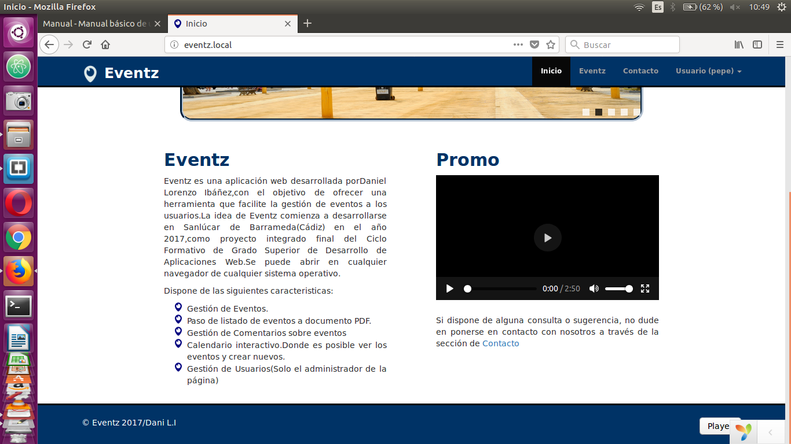
En esta pantalla aparece un reproductor con tres canciones.
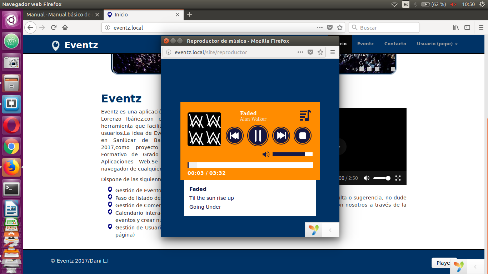
Añadir y modificar comentario ¶
Una vez estes logueado esta al menu en la pestaña Eventz podras a ver todos los eventos pues en la vista detalle pulsando el boton ver en el evento se visualizan los comentarios.
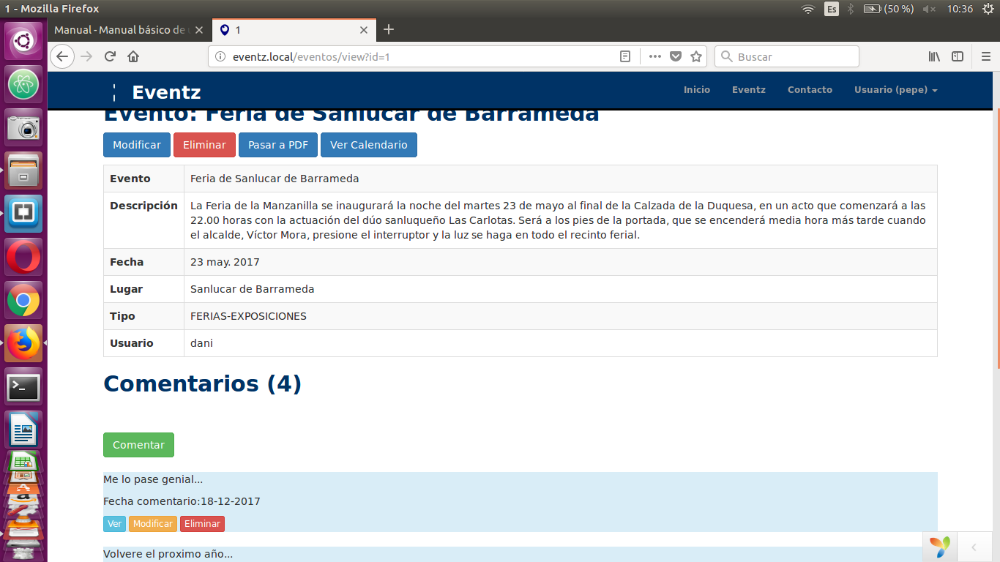
Para añadir un nuevo comentario pulsa sobre el boton de "comentar" en el detalle de un evento, y aparecerá en pantalla un formulario, rellene los campos y pulse añadir.

Si desea modificar un comentario, pulse sobre el botón de "Modificar" y le aparecerá el mismo formulario para modificar los datos del comentario deseado.
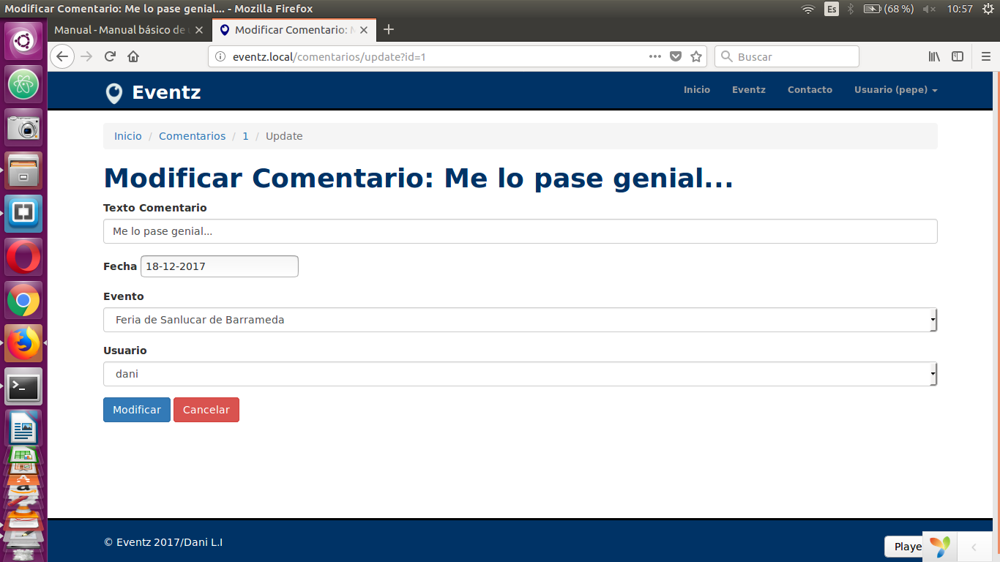
Borrar comentario ¶
Si desea borrar un comentario, solo debe de pulsar sobre el botón de "Borrar", en el comentario deseado.